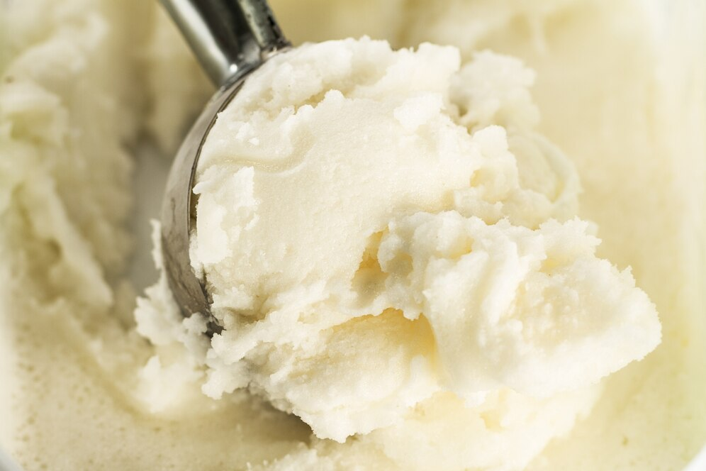

Ingredientes:
- 1 lata de leite condensado
- 1 lata de creme de leite
- 1 xícara de leite integral
- 1 colher (chá) de essência de baunilha
- 2 claras
- 1/2 xícara de açúcar
- Frutas ou coberturas a gosto (opcional)
Modo de Preparo:
-Preparar a Mistura Base
Em uma tigela grande, bata as claras em neve até ficarem bem firmes.
Em outra tigela, misture o leite condensado, o creme de leite, o leite integral e a essência de baunilha até formar uma mistura homogênea.
-Incorporar as Claras em Neve
Com cuidado, adicione as claras em neve à mistura, mexendo delicadamente para não perder a leveza das claras.
-Adoçar a Mistura
Adicione o açúcar e mexa até que ele esteja completamente dissolvido.
-Congelar
Despeje a mistura em um recipiente adequado para congelamento e cubra com plástico filme ou uma tampa.
Leve ao congelador por pelo menos 6 horas ou até que o sorvete esteja completamente firme.
-Servir
Retire o sorvete do congelador, espere alguns minutos para amolecer um pouco e depois sirva em taças ou casquinhas.
-Dica
Você pode adicionar frutas, chocolate picado ou calda de chocolate à mistura antes de congelar para dar um toque especial ao seu sorvete caseiro!